1. Introducción
¿Qué es Antea CheckIN?
Antea CheckIN es una herramienta líder en España para el registro horario, diseñada para cumplir con la normativa vigente y optimizar la gestión del tiempo de los empleados. Desarrollada por Antea, ofrece una solución sencilla y práctica para controlar la productividad y asistencia del personal.
Características principales
- Multiplataforma: Disponible en PC, tablet y móvil, permitiendo acceso desde cualquier dispositivo.
- Avisos y notificaciones: Configuración de alertas para recordar a los empleados cuándo registrar su entrada y salida.
- Importación de trabajadores: Permite registrar empleados mediante la carga de archivos CSV.
- Horarios de trabajo: Posibilidad de establecer horarios de trabajo para controlar accesos.
- Informes: Genera informes detallados de faltas, bajas y vacaciones.
- Control de IPs: Permite controlar desde qué direcciones IP los empleados pueden registrar sus accesos.
- Integración con Antea Laboral: Sincronización de datos para incluir el registro horario en las nóminas.
Ventajas
- Aumento de la rentabilidad: Mejora la productividad al llevar un control eficiente del tiempo trabajado.
- Disponibilidad inmediata: La herramienta está lista para usarse rápidamente tras su contratación.
- Confidencialidad: Cumple con el Reglamento General de Protección de Datos (RGPD).
- Atención personalizada: Ofrece soporte personalizado para cualquier necesidad o incidencia. Puede contactar por email escribiendo a soporte@anteacheckin.es o por teléfono en el 854 63 02 86.
2. Inicio de sesión
Primer inicio de sesión
Una vez recibido el correo de bienvenida con las claves e instrucciones correspondientes, para comenzar a utilizar Antea CheckIN, el primer paso es iniciar sesión. Esto puede hacerse a través del navegador, accediendo a www.anteacheckin.es, haciendo clic en el botón de Iniciar Sesión situado en la parte superior derecha de la página web.
Recordemos que la aplicación móvil es de uso exclusivo para los trabajadores; como administradores del sistema, deberemos acceder desde la página web.
La primera vez que accedamos al sistema, se nos solicitará obligatoriamente que restablezcamos la contraseña por motivos de seguridad.
Si en el futuro necesita reestablecer la contraseña, desde esta misma página puede seleccionar su recuperación, e inmediatamente recibirá en su correo la nueva clave de acceso.
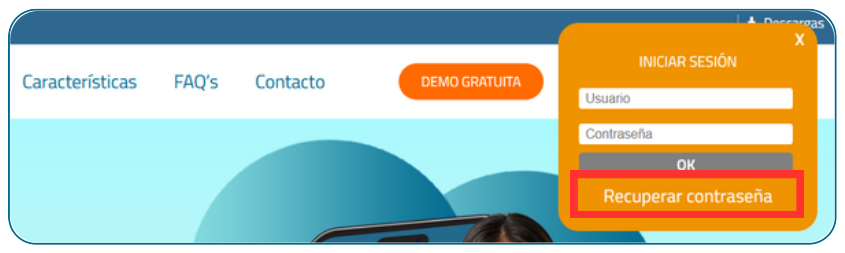
Recuperar contraseña
Si en el futuro el Administrador necesita reestablecer la contraseña, desde esta misma página puede seleccionar su recuperación usando la opción que se encuentra al hacer clic en Iniciar Sesión, llamada Recuperar Contraseña, pulsaremos e introduciremos los datos solicitados: CIF o NIF y el email de la empresa.
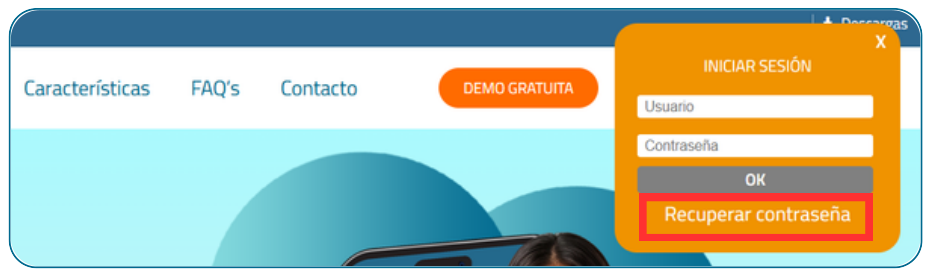
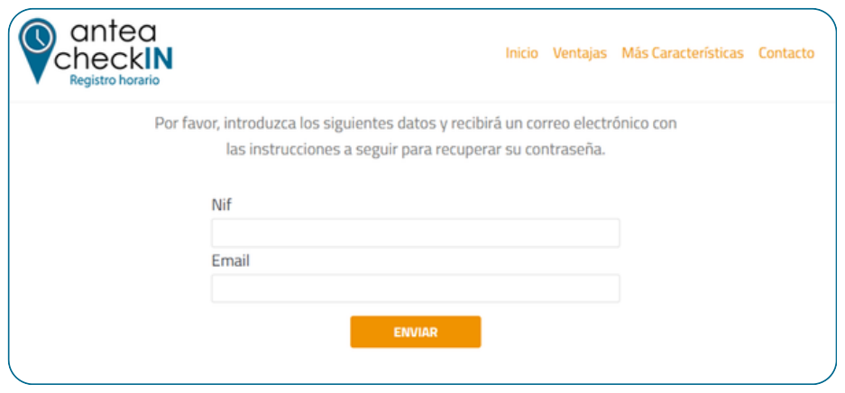
Tras pulsar el botón de Enviar, recibirá inmediatamente en su correo las indicaciones para recuperar la contraseña.
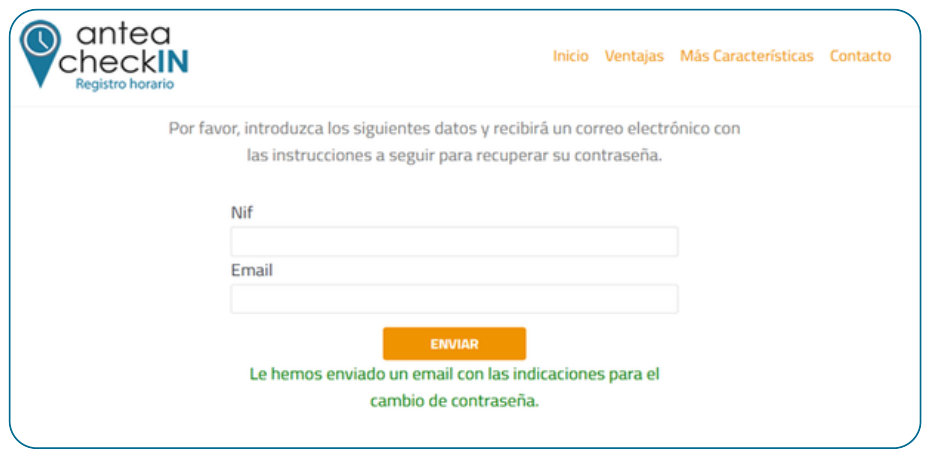
El Administrador deberá de buscar en la Bandeja de entrada de su correo electrónico (incluida la carpeta de Correo No deseado o SPAM) el correo de bienvenida con remitente noreply@anteacheckin.es
Dentro de ese email pulsaremos el botón de Recuperar contraseña y seguiremos los pasos para ejecutar dicha acción.
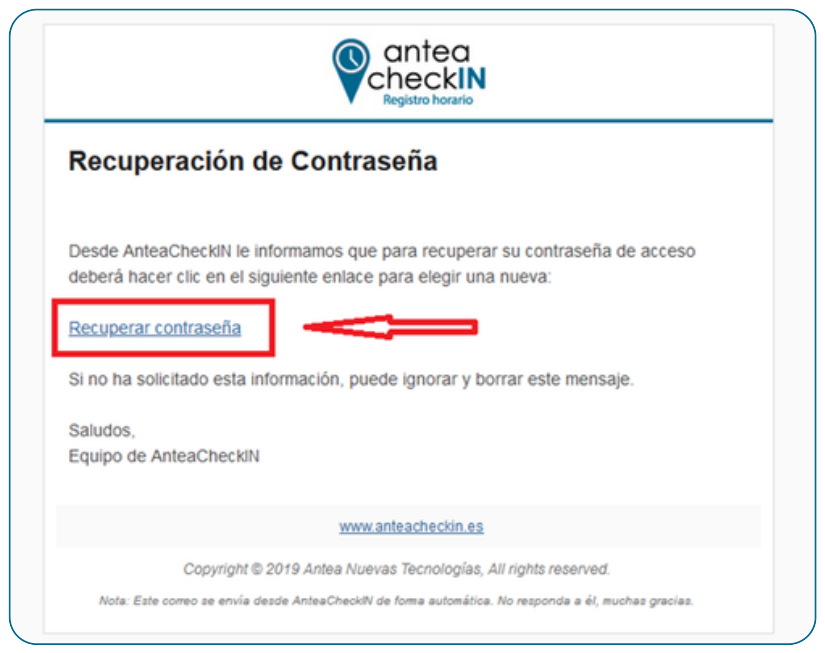
Introduciremos la nueva contraseña a usar por el Administrador y el proceso estaría finalizado. Recomendamos usar una contraseña con mínimo 6 caracteres que incluyan letras y números.
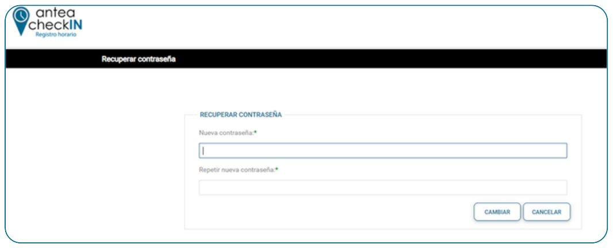
Funcionalidades
La primera pantalla con la que nos encontramos al acceder a Antea CheckIN nos muestra tres herramientas clave que facilitan la gestión laboral:
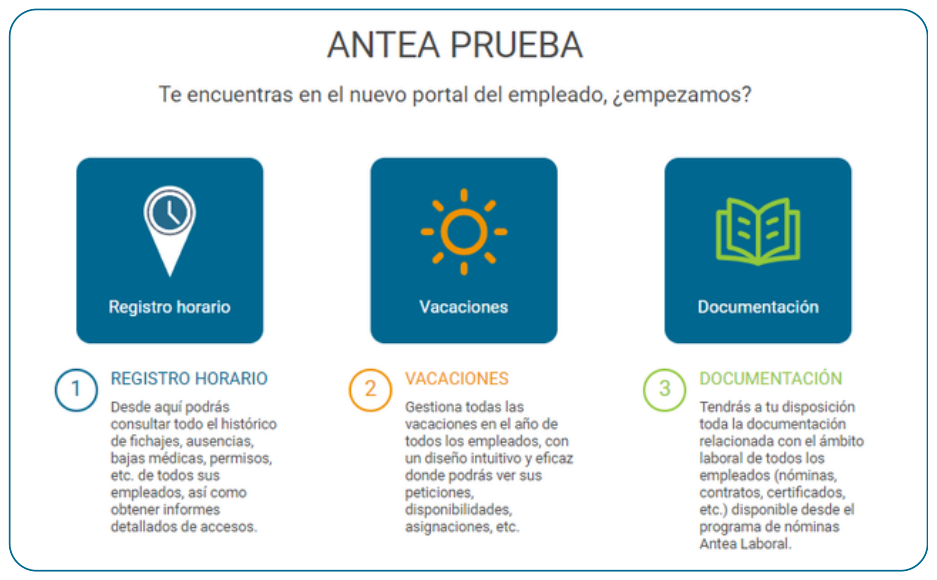
Registro horario
Desde esta sección, podemos acceder a todo el histórico de fichajes, ausencias, bajas médicas, permisos, y más, de todos nuestros empleados. Además, contamos con la capacidad de generar informes detallados de accesos, vacaciones, bajas médicas, etc.
Vacaciones
Nos permite gestionar de forma eficiente las vacaciones de todos los empleados. A través de un diseño intuitivo, podemos visualizar sus peticiones, disponibilidades y asignaciones.
Documentación
Accedemos a toda la documentación laboral, como nóminas, contratos y certificados, gracias a la integración con el programa de nóminas Antea Laboral, lo que facilita la gestión de los documentos de todos nuestros empleados.
Cambiar contraseña
Si el Administrador, tras acceder al sistema de Antea CheckIN, necesita cambiar su contraseña por una nueva, en la parte superior derecha nos aparecerá el nombre de la empresa y el siguiente icono:
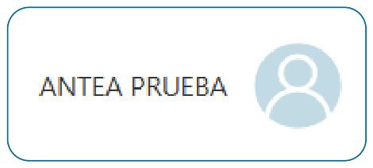
Al hacer clic, nos llevará a la pantalla desde donde podremos restablecer la contraseña por la que deseemos.
También puede realizarse el mismo proceso si accedemos a la sección de Registro Horario, y desde el menú lateral izquierdo, tras abrir el desplegable llamado Configuración, hacemos clic en Cambiar Contraseña.
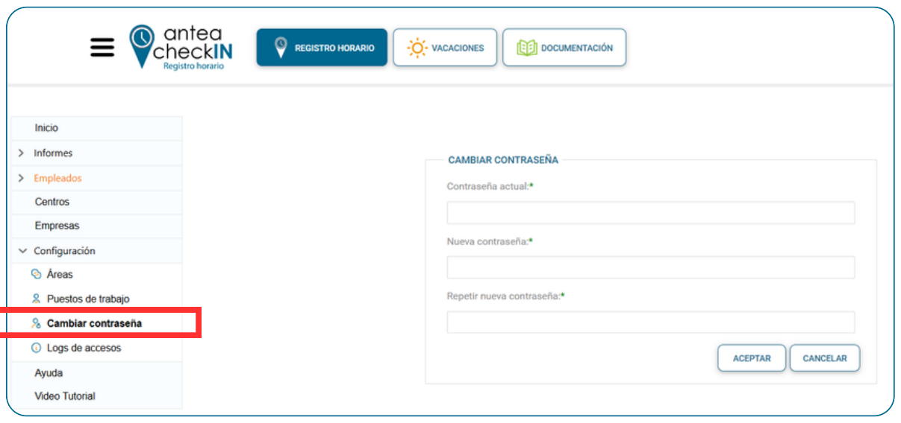
3. Registro horario
Centro de trabajo
El primer paso para comenzar a usar Antea CheckIN será crear el Centro o Centros de Trabajo.
Para ello, accederemos a la sección de Registro Horario, y una vez dentro, en el menú lateral izquierdo haremos clic en Centros y posteriormente pulsaremos el botón llamado Añadir Centro que se encuentra en la parte superior.
Es obligatorio establecer al menos un centro de trabajo, ya que al crear un empleado obligatoriamente el sistema nos obligará asignarle al menos uno.
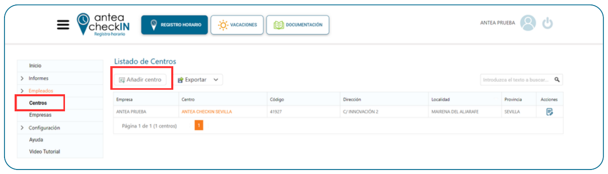
Al hacer clic nos aparecerá una pantalla con un formulario para completar los siguientes datos del centro:
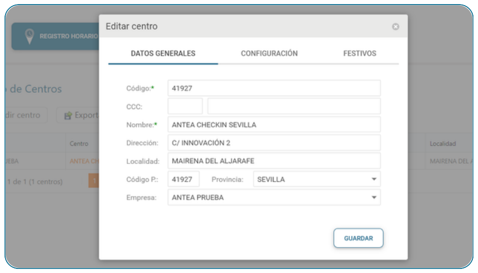
Datos generales
En esta pestaña introduciremos los datos generales correspondientes al Centro de Trabajo.
- Código: Código identificativo del centro.
- CCC: Código de Cuenta de Cotización de la empresa.
- Nombre: Nombre del centro de trabajo.
- Dirección: Dirección completa del centro de trabajo.
- Localidad: Localidad a la que pertenece el centro de trabajo.
- Provincia: Provincia a la que pertenece el centro de trabajo.
- Código postal: Código Postal a la que pertenece el centro de trabajo.
- Empresa: Nombre de la empresa que pertenece el centro de trabajo.
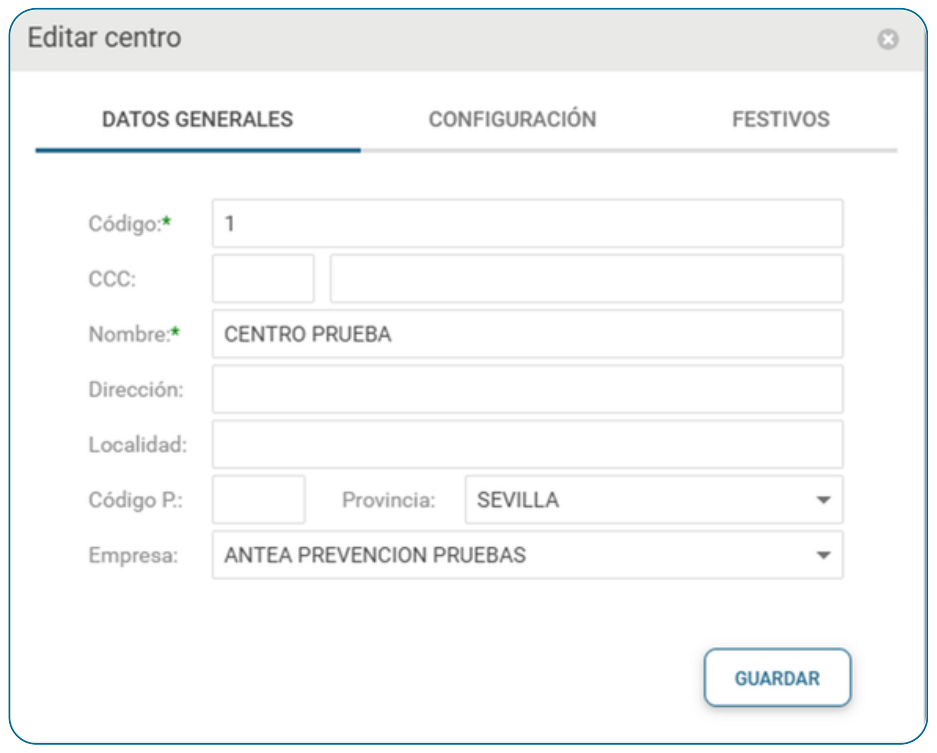
Configuración
En la pestaña de Configuración, especificaremos los detalles del Centro de Trabajo.
- Elección de Jornadas Nocturnas.
- Elección de Sábados y/o domingos si son laborables.
- Limitación de acceso de trabajadores según horario establecido.
- Permitir a los empleados obtener informes en PDF de sus accesos.
- Elección de días de vacaciones por defecto que tendrán los empleados y si son días de vacaciones laborables o naturales.
- Elección de la fecha del inicio de devengo del periodo vacacional.
- Días de antelación en el que un empleado pueda solicitar vacaciones.
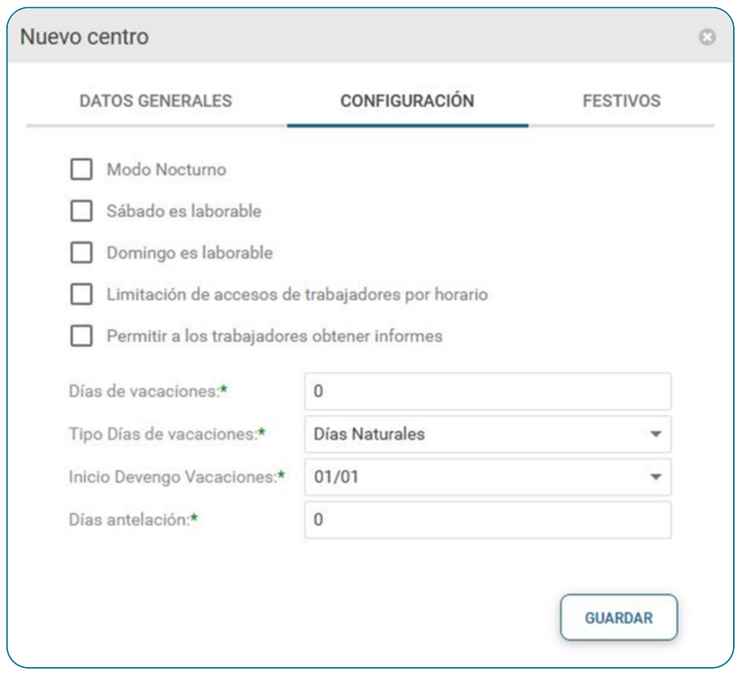
Festivos
En esta última pestaña añadiremos los festivos locales o autonómicos, ya que los festivos anuales estarán ya predefinidos.
Para añadir un festivo local o autonómico pulsaremos el botón superior llamado Añadir Festivo. Rellenaremos los datos necesarios y pulsaremos el botón de Aceptar.
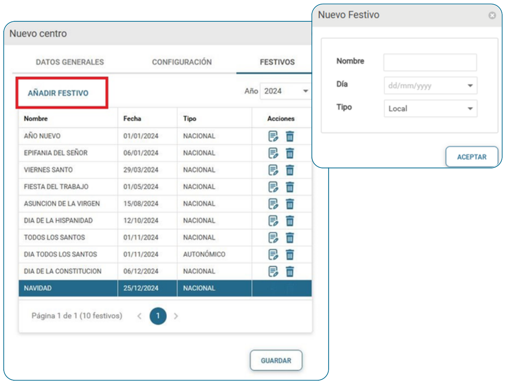
Una vez hayamos rellenado los Datos Generales, Configuración y Festivos de nuestro Centro de trabajo, habremos completado el primer paso y se nos mostrará nuestro centro en el Listado de Centros.
Podemos añadir tantos Centros de trabajo como nuestra actividad requiera.
Exportar listado de Centros de trabajo
El botón Exportar que se encuentra en la parte superior nos permitirá descargar un listado de los centros de trabajo que tenemos creados en nuestra empresa.
El listado se podrá descargar en diferentes formatos (.xls, .xlsx, .csv) listos para ser leídos por procesadores de hojas de cálculo (como, por ejemplo, Excel).
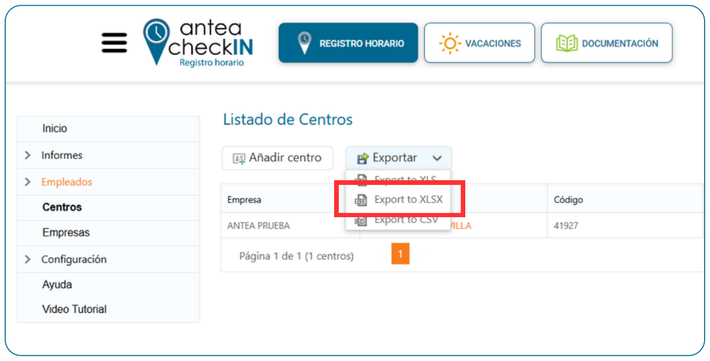
Editar Centros de trabajo
Si necesitamos editar algún dato de nuestro centro, haremos clic en el botón de Acciones y haremos las modificaciones necesarias.
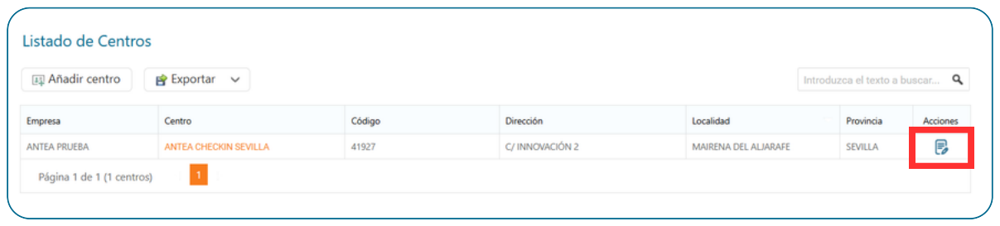
Áreas de trabajo
Si nuestra empresa opera en distintas áreas (ciudades, zonas o países), será el momento de crearlas, para posteriormente poder asignar un centro y un área a cada trabajador. Para ello, en el menú iremos a Configuración > Áreas > Añadir área.
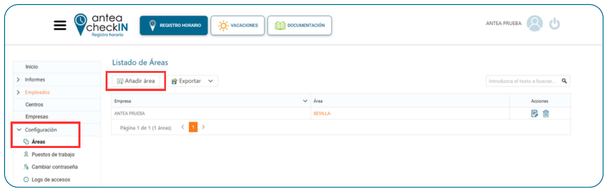
Introduciremos el nombre del Área que deseamos añadir y pulsaremos en Guardar.
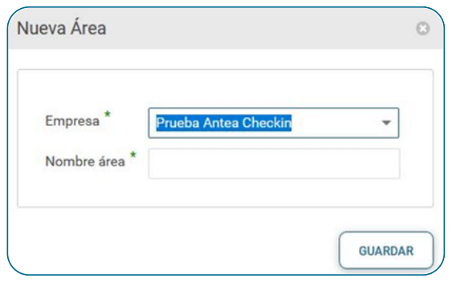
Exportar listado de Áreas de trabajo
El botón “Exportar” que se encuentra en la parte superior nos permitirá sacar un listado de las áreas que tenemos creadas en nuestra empresa. Todas ellas se podrán descargar en diferentes formatos (.xls, .xlsx, .csv) aceptados por procesadores de hojas de cálculo.
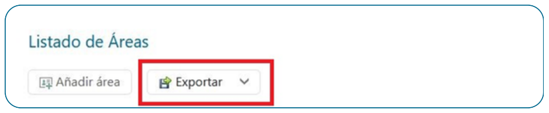
Puestos de trabajo
Crearemos por último los distintos puestos de trabajo, accediendo al menú lateral izquierdo dentro de la sección de Registro Horario, desde Configuración > Puestos de Trabajo > Añadir Puestos de Trabajo.
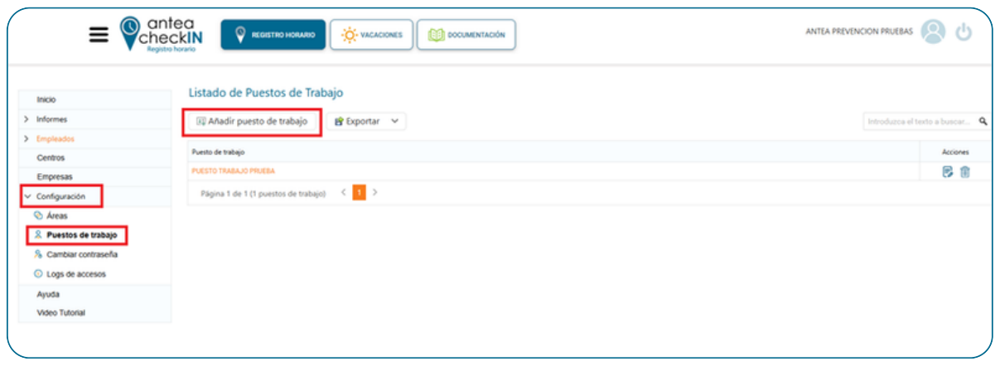
Escribiremos el Nombre del Puesto de Trabajo que necesitemos crear y seleccionaremos la empresa a la que pertenece, tras ello pulsaremos en Guardar.
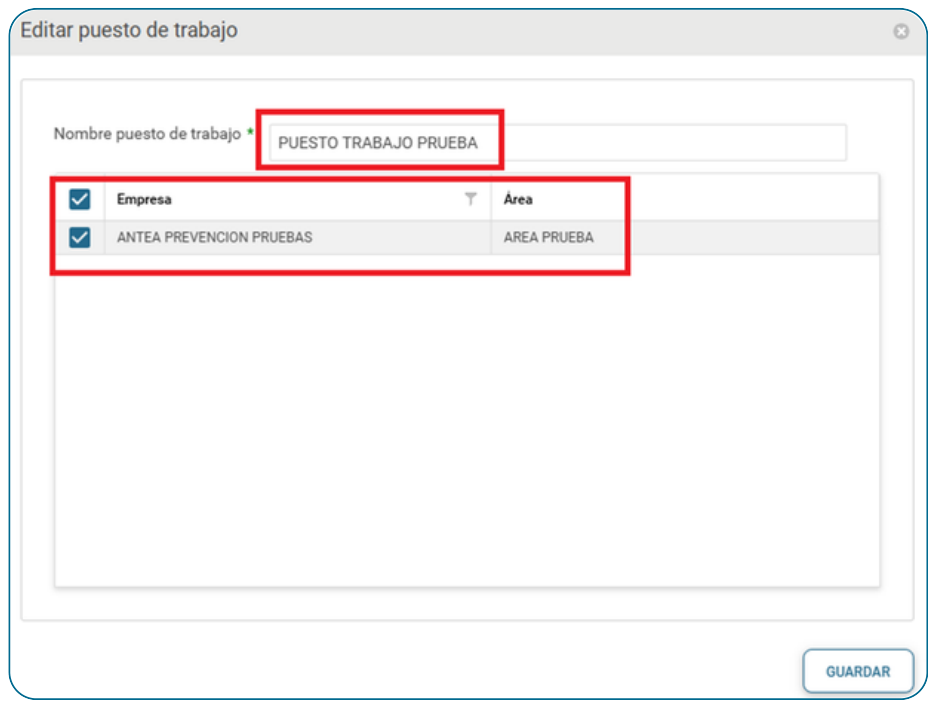
Exportar listado de Puestos de trabajo
El botón Exportar que se encuentra en la parte superior nos permitirá sacar un listado de los puestos de trabajo que tenemos creados en nuestra empresa. Todos ellos pueden descargarse en diferentes formatos (.xls, .xlsx, .csv) aceptados por procesadores de hojas de cálculo.
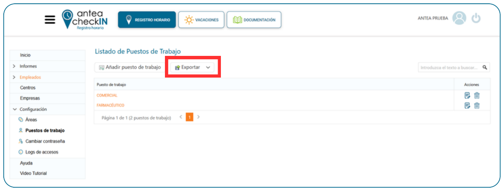
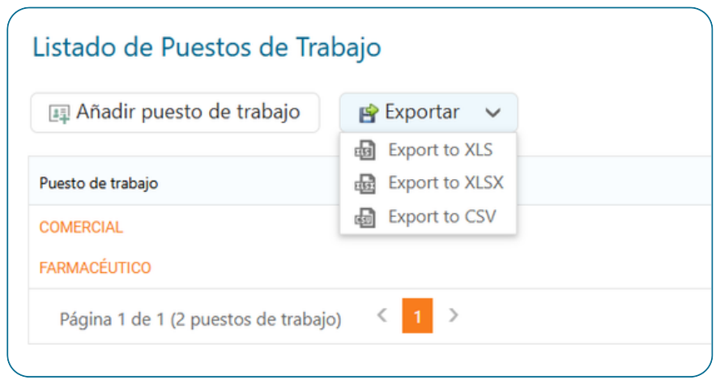
Empleados
Una vez creados los Centros, las Áreas y los Puestos de Trabajo de nuestra empresa, procederemos a dar de alta a los empleados.
Para ello, nos iremos en el menú lateral izquierdo dentro de la sección de Registro Horario al apartado Empleados > Listado de empleados.
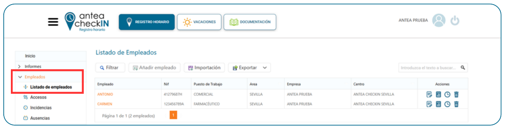
Existen dos vías para añadir a los empleados:
- Manualmente, de manera individual, mediante el botón Añadir empleado.
- Masivamente, importando un archivo externo (tipo Excel) utilizando el botón Importación.
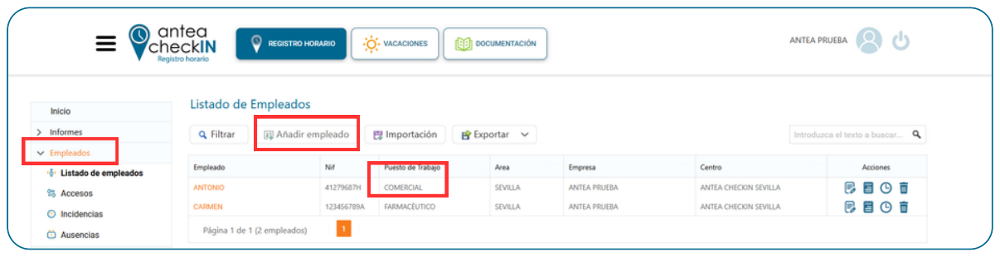
Añadir Empleado
Para añadir a nuestro empleado pulsaremos el botón superior llamado Añadir Empleado y comenzaremos a cumplimentar los datos. Tras pulsar el botón de Añadir Empleado nos encontraremos con diferentes pestañas de configuración del empleado: Datos de Empleado, Horarios y Permisos.
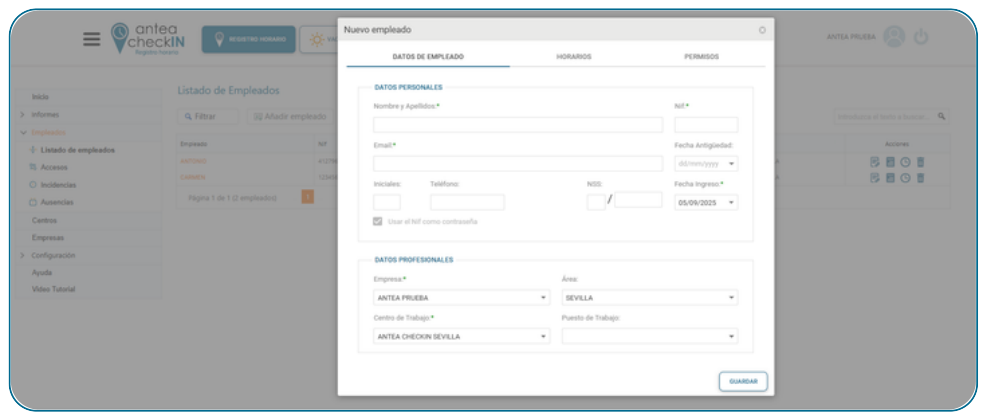
Datos de Empleado
La pestaña de Datos de Empleado la dividiremos en Datos personales y Datos Profesionales.
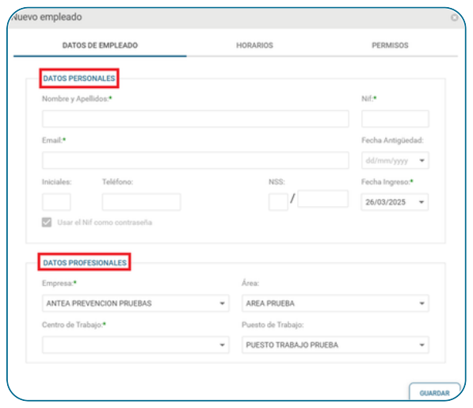
Rellenaremos los siguientes datos en el apartado de Datos Personales:
Nombre y apellidos, Email, Iniciales, Teléfono, NSS (Número de seguridad social), NIF (con letra mayúscula), Fecha Antigüedad (en la empresa) y Fecha de ingreso.
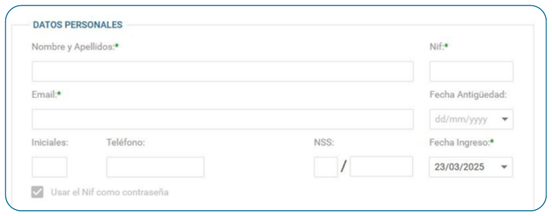
Seleccionaremos según los desplegables los siguientes datos en el apartado de Datos Profesionales: Empresa, Centro de Trabajo, Área y Puesto de trabajo.
Gracias a los apartados que hemos visto anteriormente (Crear Centro, Crear Área, Crear Puesto de trabajo) cada uno de ellos nos aparecerán en los desplegables correspondientes. Los datos con asterisco de color verde son campos obligatorios.
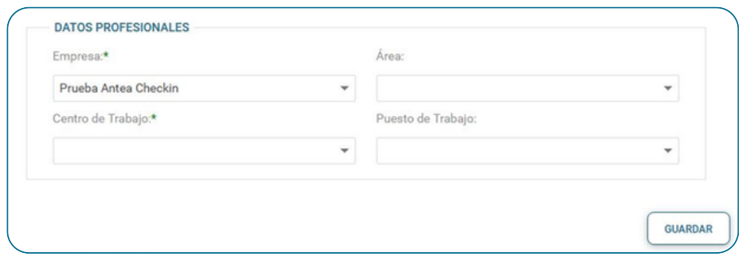
Horarios
Desde la pestaña de Horarios tendremos que seleccionar el tipo de contrato (Completo o Parcial), la zona horaria (Peninsular o Insular), el número de horas semanales del empleado o si cuenta con horario flexible.
Si marca la opción horario flexible, el empleado podrá registrar los accesos de entrada y salida de forma libre sin limitarse a un horario. Este empleado, al tener configurado el horario flexible, no aparecerá en el informe de Ausencias.
Si no elegimos la opción de horario flexible, tendremos que configurar el horario de nuestro empleado manualmente.
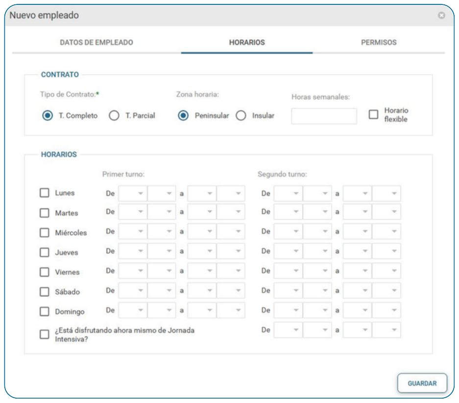
Permisos
Se definen aquí los permisos que el empleado tenga con respecto a la propia aplicación Antea CheckIN.
Seleccionaremos si queremos que tenga permisos de Empleado o Supervisor, pudiendo este último supervisar a los empleados de uno o más centros de trabajo.
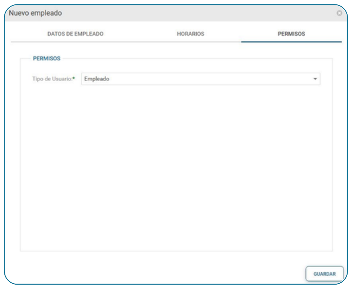
Una vez hayamos rellenado los datos del empleado, sus horarios y permisos de usuario, haremos clic en Guardar, y se nos añadirá nuestro empleado al Listado de Empleados.
Aplicación Multiempleado
Esta nueva pestaña aparece cuando volvemos a editar nuestro empleado ya creado. Solo deberemos rellenarla en caso de tener contratado Antea CheckIN Multiempleado, una herramienta diferente a Antea CheckIN, pensada para aquellas empresas que quieran que el fichaje de todos sus empleados se realice a través de un único dispositivo común (una tablet) para todos.
Asignaremos el nombre de usuario y la contraseña del empleado que usará en la aplicación de Antea CheckIN Multiempleado.
Si estos campos no se rellenan, de manera automática se establecerá su NIF con la letra en mayúsculas como nombre de usuario y clave de acceso a la aplicación.
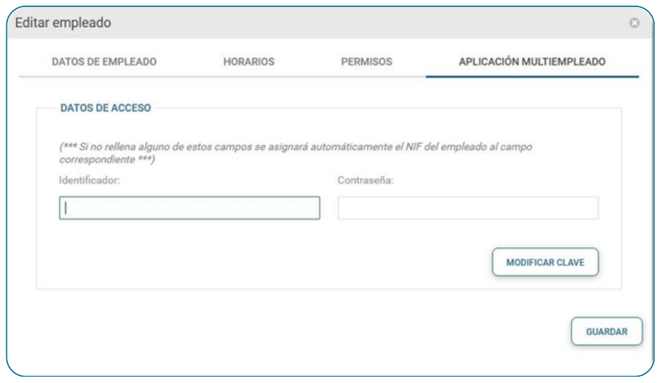
Acceso Empleado
Una vez añadido nuestro empleado al Listado de Empleados, el empleado tendrá acceso al sistema de Antea CheckIN. Tanto su usuario como su contraseña serán su NIF con letra mayúscula.
Tras su primer acceso, le pedirá cambiar su contraseña por la que el empleado desee por seguridad.
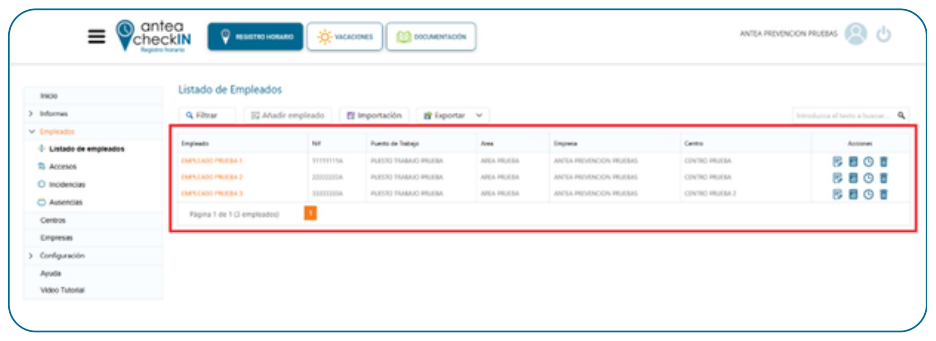
Importar Empleados
Existe la opción de importar empleados desde la pantalla de Listados de Empleados usando el botón llamado “Importación” que se encuentra en la parte superior.
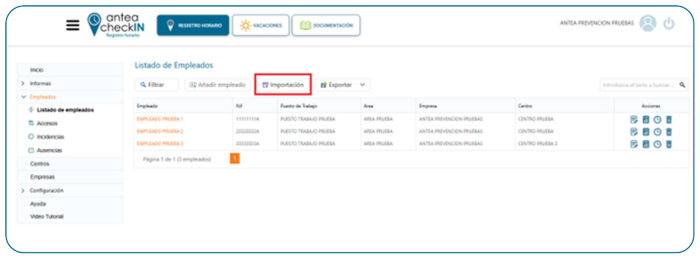
Al hacer clic, se nos abrirá una pestaña con tres opciones:
- Buscar: importar el archivo desde nuestro ordenador (haciendo clic en Buscar).
- Descargar Plantilla: nos descargará un fichero en formato .csv que editaremos según el esquema indicado en la plantilla.
- Descargar Manual: manual de uso de la plantilla para poder editar correctamente y que pueda ser importada sin errores.
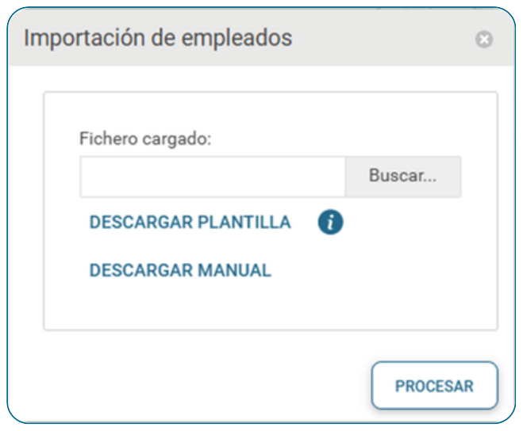
Listado de Empleados
Una vez creados nuestros empleados, nuestro listado de empleados se verá del siguiente modo:
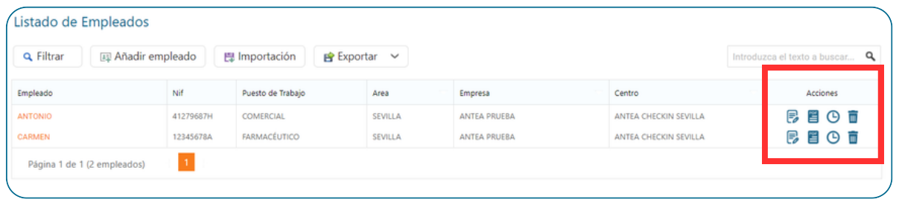
Las acciones que podremos realizar desde este panel serán gracias a los iconos de la parte de la derecha, cuyas funciones explicamos a continuación:
- Editar los datos del empleado.
- Generar informe ‘Resumen de asistencia’ del mes actual.
- Ir al listado accesos del empleado.
- Dar de baja empleado. Esto hará que el empleado desaparezca de nuestro listado. Seleccionando la fecha que será efectiva su baja.
Dar de Baja Empleados
Tal y como hemos explicado en el punto anterior si queremos dar de baja a un empleado, podemos hacerlo dando clic en el icono de la papelera.
Exportar Listado de Empleados
El botón Exportar que se encuentra en la parte superior nos permitirá sacar un listado de los empleados que tenemos creados en nuestra empresa, en diferentes formatos (.xls, .xlsx, .csv). Todos ellos aceptados por procesadores de hojas de cálculo.
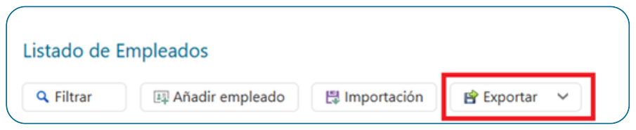
Resetear clave Empleado
Si un empleado tiene un error con su clave y no quiere recurrir al proceso de recuperar contraseña, el perfil administrador podrá Resetear la clave del empleado.
Para realizarlo, accederemos a Listado de Empleados > Empleados > Seleccionaremos a nuestro empleado > Datos Personales y usaremos el botón llamado Resetear Clave.
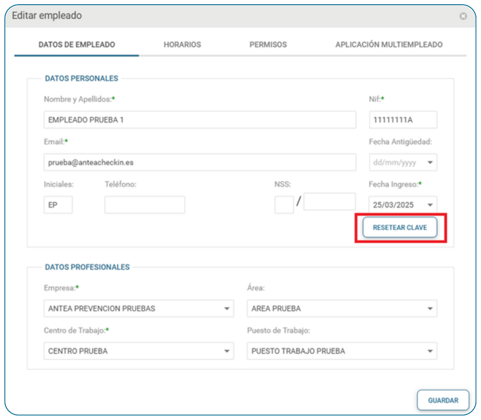
Tras resetear la clave, la nueva contraseña del empleado volverá a ser su NIF con la letra mayúscula.
Accesos
Desde este menú podremos supervisar los accesos de todos los empleados. Para acceder a él, pulsaremos en el desplegable del menú lateral izquierdo dentro de la sección de Registro Horario llamado Empleados y posteriormente en Accesos.
Por defecto se muestran los registros del mes actual. Si queremos establecer otros criterios, pulsaremos el botón Filtrar y nos permitirá elegir diferentes fechas.
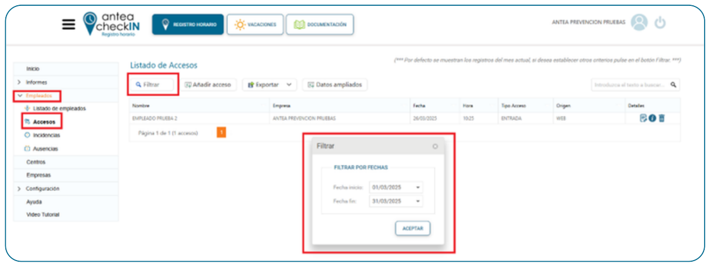
Gracias al Buscador que tenemos en la parte superior derecha podremos filtrar por el texto que deseemos y en nuestro listado solo aparecerán las búsquedas relacionadas con el texto que hemos escrito.
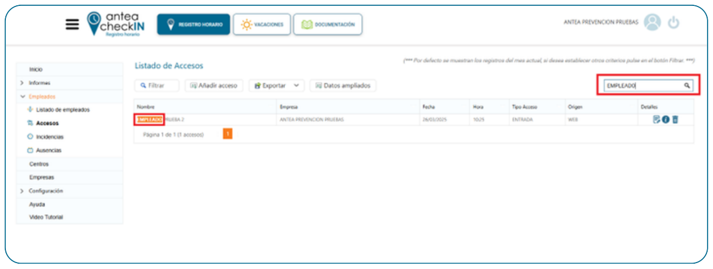
Exportar Listado de Accesos
El botón Exportar, ubicado en la parte superior, nos permitirá generar un listado de accesos de todos nuestros empleados del mes actual (si no hemos aplicado filtros o utilizado el buscador) en varios formatos compatibles con procesadores de hojas de cálculo (tipo Excel), como .xls, .xlsx y .csv.
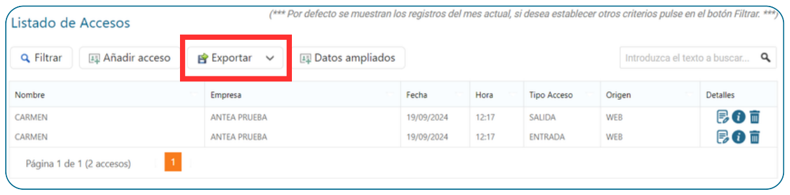
Añadir Acceso
El sistema nos permite crear un nuevo Acceso para casos excepcionales por olvido del empleado, usando el botón superior de Añadir acceso.
Desde esta opción seleccionaremos el empleado, si es un registro de entrada o salida y su fecha correspondiente (incluida la hora).
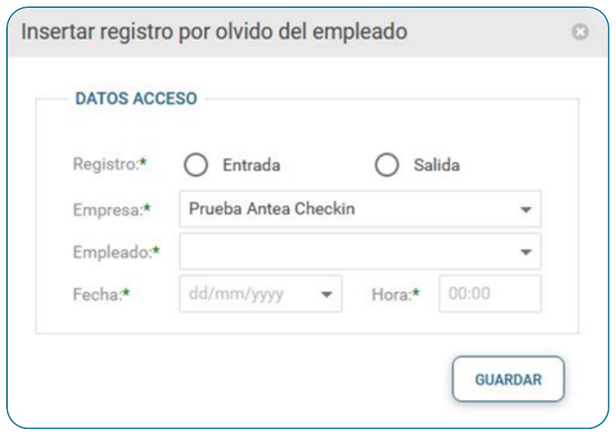
Editar Acceso
El sistema de Antea CheckIN también permite editar, excepcionalmente, la fecha y hora del Acceso creado con anterioridad por algún empleado.
Nos desplazaremos al acceso en cuestión que queremos editar y usaremos el botón para acceder a su edición.
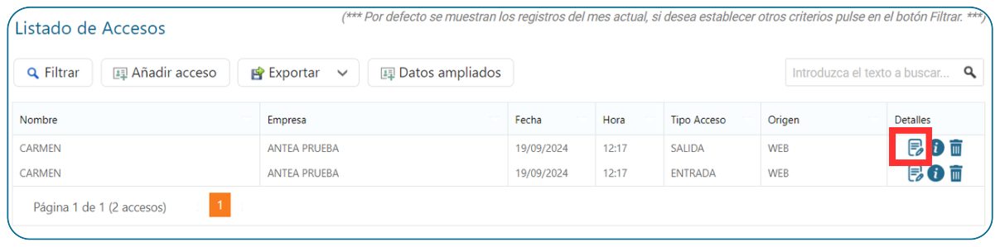
Información de Acceso
Usaremos el botón de información para conocer más información del acceso solicitado en función del origen. Este botón se encuentra en la parte de la derecha del acceso solicitado.
Dependiendo de si el acceso es a través de la web o desde la aplicación del móvil, nos dará más información acerca de la ubicación del acceso. Si es a través de la web nos mostrará la IP desde la cual se ha realizado el acceso y si es a través de la aplicación móvil, nos aparecerá un mapa con la ubicación.
También desde el botón de Datos ampliados, que se encuentra en la parte superior, nos aparecerá más información como la calle, la población… desde donde se ha realizado el acceso.
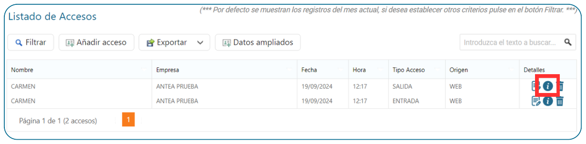
Incidencias
Las incidencias acreditan la ausencia del empleado extendiéndose en el tiempo debido por ejemplo a una incapacidad laboral de la persona trabajadora.
Desde esta opción veremos y gestionaremos las incidencias y bajas médicas de los empleados.
Para añadir una nueva incidencia usaremos el botón superior llamado “Añadir Incidencia”.
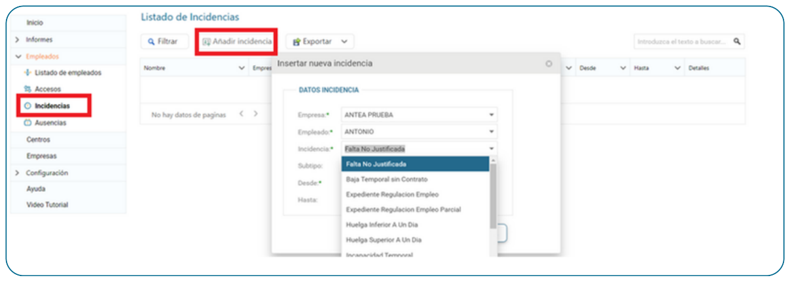
Para editar una incidencia ya almacenada, de forma puntual, usaremos el icono que se encuentra en la parte de la derecha de la línea solicitada de la incidencia.
También con el icono de la papelera de la parte de la derecha nos permitirá eliminar la incidencia creada.
Tipos de incidencias
El sistema de Antea CheckIN permite seleccionar las siguientes incidencias:
- Falta No Justificada
- Falta Justificada
- Baja Temporal sin Contrato
- Suspensión de empleo y sueldo
- Expediente de Regulación de Empleo
- Expediente de Regulación de Empleo parcial
- Huelga inferior a un día
- Huelga superior a un día
Ausencias
Las ausencias acreditan la falta de presencia de un trabajador en su lugar de trabajo durante el horario laboral, ya sea de manera justificada o injustificada.
Podremos añadir ausencias a los empleados usando el botón Añadir ausencia; para ello seleccionamos al empleado, el tipo de ausencia y la fecha de ésta. También podremos editar la fecha de inicio y fin de la ausencia del empleado.
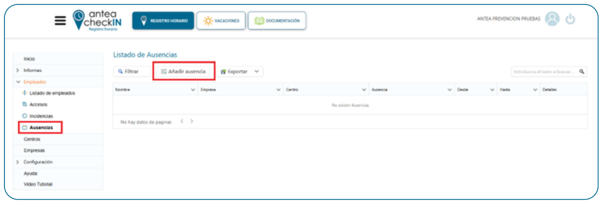
Existen dos tipos de ausencia:
- Falta Justificada
- Falta no Justificada
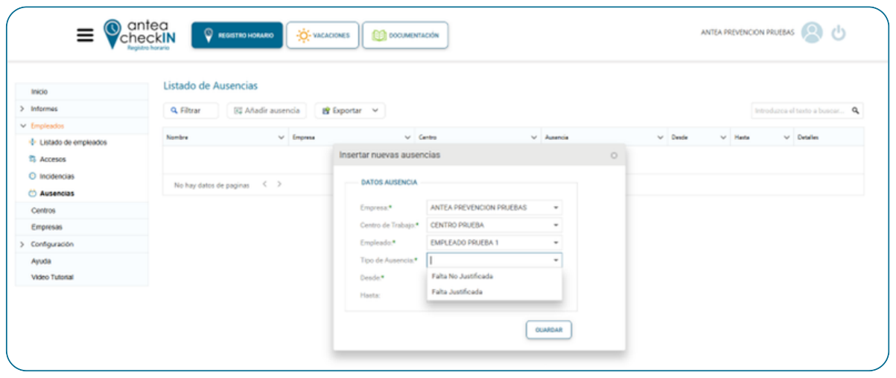
Exportar Ausencias
El botón Exportar que se encuentra en la parte superior nos permitirá sacar un listado de ausencias que tenemos creado en nuestra empresa en diferentes formatos (.xls, .xlsx, .csv) aceptados por procesadores de hojas de cálculo.
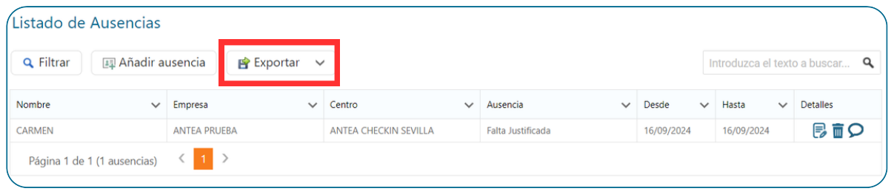
Editar Ausencias
El sistema de Antea CheckIN también permite editar para casos excepcionales la fecha de la ausencia creada con anterioridad.
Nos desplazaremos a la ausencia en cuestión que queremos editar y usaremos el botón para acceder a su edición.
Detalles Ausencias
También en la columna Detalles, tenemos el botón que nos habilita una ventana emergente que nos permite tener una conversación con el Empleado en relación a la ausencia la cual hemos seleccionado.
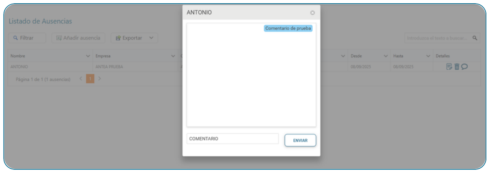
Empresa
Contiene la/s empresa/s que gestionamos. Estas habrán sido cargadas previamente al sistema por el equipo de soporte de Antea CheckIN.
Independientemente del usuario con el que entremos, siempre visualizaremos los empleados de todas nuestras empresas.
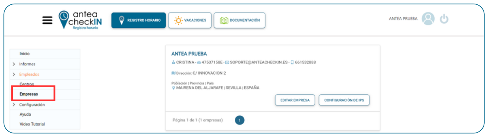
Podremos editar los datos de nuestra empresa, como el nombre de contacto, el email y la dirección, así como añadir el logo y sello personalizados… haciendo clic en el botón de Editar Empresa.
El botón Configuración de IPs permite gestionar las direcciones IP que el sistema de Antea CheckIN reconocerá como válidas. De esta manera, a través del informe de IPs Incorrectas, el Administrador podrá identificar desde qué direcciones IP distintas a las registradas han accedido los empleados al sistema. En otras palabras, estas direcciones IP determinan si el acceso de un empleado a la aplicación web de Antea CheckIN es correcto o no.
Podemos añadir, editar o eliminar las IPs que necesitemos.
Informes
Antea CheckIN también nos ofrece la opción de descargar distintos tipos de informes en formato PDF.
Desde esta opción del menú podrá generar y ver distintos informes de asistencia, de accesos mediante IPs incorrectas, accesos erróneos, ausencias, incidencias o vacaciones. También es posible exportar información como vacaciones y ausencias de los empleados, a Antea Laboral, mediante ficheros CSV.
Para generar los informes de accesos (Resumen y Detallado) debe elegir el Centro de Trabajo y mes para que se genere el informe.
El Informe Resumen muestra para cada empleado su registro de entrada, salida, horas de trabajo y de pausa de cada día del mes.
El Informe Detallado muestra para cada empleado su registro de entrada y salida, así como desde dónde lo ha realizado, ya sea su IP si es mediante web o la localización si es mediante la app móvil.
El informe de IPs incorrectas mostrará la información relativa al empleado, día, hora, etc. desde el que se ha producido el registro con la IP no registrada en Antea CheckIN.
El Informe de Vacaciones muestra las fechas desde y hasta de las vacaciones de sus empleados.
Para los informes de Accesos Erróneos, Ausencias e Incidencias puede elegir la empresa o empresas para las que se generará el informe (si no selecciona ninguna se generará para todas sus empresas), así como el rango de fechas necesario para mostrar el informe.
El informe de Accesos erróneos debe ser frecuentemente utilizado para conocer qué empleados les falta el registro de entrada o salida en la aplicación.
El informe de Ausencias le permite seleccionar dos opciones, Faltas o Ausencia de fichajes. El informe de Faltas genera un informe similar al de Incidencias, pero sólo para las incidencias del tipo Falta Justificada y Falta No Justificada introducidas en el sistema.
Las Ausencias de fichajes calculan y muestran aquellos empleados para los que hay un día que no han efectuado ningún registro ni de Entrada ni de Salida, entendiendo esto como una ausencia laboral. Para ello el sistema tiene en cuenta los festivos nacionales del centro de trabajo, las incidencias y los días de vacaciones del empleado. Se muestra además el Puesto de Trabajo del empleado, así como su teléfono. No se mostrarán en este informe los empleados que tengan marcada en su ficha la opción de Horario Flexible.
El Informe de Incidencias muestra las incidencias de los empleados en las fechas indicadas, así como los días al año que el empleado no ha podido trabajar por una incidencia.
El informe de Bajas Médicas muestra la misma información que el de Incidencias, pero sólo para las incidencias del tipo Incapacidad Temporal. Pueden marcar la opción de no incluir Paternidades / Maternidades / Riesgos.
Desde la opción de Exportar a Laboral podrá generar ficheros CSV con las Vacaciones y Ausencias de sus empleados filtrando los datos por mes y año para las Vacaciones o eligiendo la empresa o empresas y el rango de fechas correspondiente para las Ausencias.
4. Vacaciones
En la sección de Vacaciones podrá visualizar y gestionar de manera fácil e intuitiva las vacaciones de sus empleados, facilitando así una administración eficiente de este aspecto clave en su empresa.
Solicitudes
Podrá gestionar las vacaciones de sus empleados desde la pestaña Solicitudes. El menú superior dentro del apartado de Solicitudes consta de varias secciones.
El botón de Selección de ejercicios nos permite seleccionar entre el ejercicio actual, el ejercicio anterior y el ejercicio posterior del actual.
Al acceder el sistema automáticamente siempre nos ubicará en el ejercicio actual para solicitar vacaciones, pero podremos alternar entre el anterior y el año próximo si nos interesa.
El botón Selector de Empleado nos permite seleccionar entre los diferentes empleados que tenemos dados de alta en nuestra empresa en función del centro al que pertenezca.
El botón de selector Todos o Pendientes nos muestra todos los empleados de nuestra empresa o solo los empleados que tenemos solicitudes pendientes de vacaciones de ese ejercicio seleccionado.
El Calendario es la principal zona de la pantalla. Aquí visualizaremos los 12 meses que comprende nuestro periodo de devengo de las vacaciones, los cuales están conjuntamente relacionados con el año que tengamos establecido en el Selector y con la fecha fin de devengo de las vacaciones que establezca nuestra empresa.
La fecha de inicio de Devengo de las Vacaciones se configura en la pestaña Configuración de la edición del Centro.
Pongamos un ejemplo. En mi empresa el fin de devengo es el 31/12. Por tanto, los 12 meses a mostrar por defecto están comprendidos entre enero y diciembre de un mismo año natural. Este caso implica un comportamiento normal en el sistema. La fecha de inicio de devengo de las vacaciones que seleccionaremos en la edición del centro será 01/01.
Pero si, por otras circunstancias, en mi empresa el fin de devengo es el 31/01, entonces los 12 meses a mostrar por defecto están comprendidos entre febrero (año en curso) y enero (año siguiente). En esta situación, cuando llegue el caso de asignar vacaciones correspondientes a días de enero, el botón Selector debe seleccionarse en el año actual, ya que esos días corresponden aún al período de vacaciones de nuestro año de devengo.
En cada mes del calendario podemos visualizar:
- Domingo y sábados: desactivados si nuestras vacaciones son de tipo Días Laborales, y activados si son de tipo Días Naturales. También serán activados si se marca la opción de Sábado o Domingo laborable. Este apartado se configura en la edición del Centro.
- Festivos: desactivados en función de los festivos configurados en la edición del centro de nuestra empresa.
- El resto de días estarán disponibles para poder ser solicitados siempre.
Para seleccionar los días que queremos asignar de vacaciones, si son varios días debemos hacer una selección múltiple, para lo que tenemos dos opciones:
- Tecla Control + clic botón izquierdo del ratón, para ir seleccionando uno a uno.
- Seleccionamos el primer día de vacaciones y, sin soltar el botón izquierdo del ratón, vamos arrastrando hasta el último día, y soltamos.
Cuando tengamos seleccionados los días que deseemos asignar al trabajador, pulsaremos el botón Solicitar y esos días quedarán directamente aprobados al trabajador que tengamos seleccionado. Esos días aparecerán de color verde en el calendario.
Igualmente, se podrán eliminar días de vacaciones ya aprobados simplemente haciendo clic en el día correspondiente y en Eliminar solicitud.
Cuando sea el empleado quien nos solicite las vacaciones, nos aparecerá una notificación en color rojo. El número dependerá de la cantidad de empleados que le han solicitado vacaciones al Administrador o Supervisor. Al pulsar sobre el número nos mostrará las solicitudes pendientes.
Podemos tener solicitudes pendientes tanto en el año actual como en el año siguiente, por lo que tendremos que usar el Selector de año para poder visualizar las solicitudes de un año u otro.
El Administrador o Supervisor podrá aprobar o rechazar de forma masiva todas las vacaciones de un empleado sin tener que ir día a día gracias al botón de Aceptar/Denegar todo de dichas solicitudes de días de vacaciones.
También podremos aprobar o cancelar dicha solicitud de días del empleado individualmente día a día. Si pulsamos sobre el día solicitado por el empleado, se nos abrirá un desplegable para aprobar o rechazar solicitud.
Por último, ubicado justo debajo del botón Solicitar, se encuentra el cuadro resumen con los días de vacaciones del trabajador seleccionado:
- Total Días: número total de días de vacaciones asignados al trabajador por año. Si pulsamos sobre él, podremos sumar o restar un número determinado de días de vacaciones a ese trabajador en particular en caso de que exista una situación puntual que lo requiera.
- Disfrutados: muestra la suma de los días ya aprobados y los que están pendientes de disfrute.
- Por Disfrutar: número de días de vacaciones que todavía le quedan al trabajador por solicitar.
- Seleccionados: al realizar una nueva solicitud, se indica aquí el número de días seleccionados, que nunca podrá ser superior al número de días disponibles en por disfrutar.
Permisos
La pestaña de Permisos nos mostrará los empleados que actuarán como supervisores de la sección de Vacaciones del centro que seleccione.
Podremos seleccionar los empleados que deseemos si queremos delegar dichas funciones a un empleado de confianza con el botón Añadir supervisor.
Propuestas
La pestaña de Propuestas nos mostrará los centros de trabajo en los que podremos crear propuestas de vacaciones para nuestros empleados.
Para que los diferentes centros creados en nuestra empresa aparezcan en este apartado, es necesario que cada uno tenga al menos un empleado asignado, con su área y puesto de trabajo debidamente configurados.
Los botones de la columna Acciones ubicados a la derecha de cada centro proporcionan acceso a la información de los empleados, un enlace directo al apartado de vacaciones y la opción de editar las propuestas de vacaciones correspondientes a ese centro. Al editar, podremos añadir el periodo de propuestas vacacional pulsando en Añadir Periodo:
En esta sección debemos definir los parámetros del período de vacaciones que estamos configurando:
- Fechas “desde” y “hasta”: establecen el rango de tiempo en el que los empleados podrán solicitar vacaciones.
- Días Vacaciones: indica la cantidad mínima de días de vacaciones que un empleado debe pedir dentro de ese período.
- Max trabajadores: determina cuántos trabajadores como máximo pueden solicitar vacaciones el mismo día dentro de ese período.
Una vez configurados estos datos, los días incluidos en el período aparecerán resaltados en color rosa en el calendario. Además, al situar el cursor sobre cualquiera de esos días, el sistema mostrará la información sobre las plazas disponibles, es decir, cuántos empleados aún pueden solicitar vacaciones en esa fecha.
Panel de control
La pestaña de Panel de Control nos mostrará el calendario de vacaciones de los empleados del centro que hayamos seleccionado previamente. También debemos de elegir entre la opción Pendientes o Aprobados (días de vacaciones).
Una vez asignadas las vacaciones al trabajador, este podrá visualizar sus días desde su propio panel de usuario. La persona encargada podrá asignar días directamente o gestionar los días propuestos por los empleados previa solicitud de los mismos.
Es una alternativa de visualización para gestionar las vacaciones, distinta a la del área del calendario.
5. Documentación
La sección de Documentación está relacionada con el apartado de documentación de nuestra empresa.
En ella podremos visualizar documentos tales como certificados de Empleados (Modelo 145), Nóminas, Retenciones, Solicitudes de Anticipos o Permisos asociados con el programa de Antea Laboral.
También nos permite subir documentos relacionados con los Gastos y Contratos de los Empleados. Además, contamos con un apartado de Zona Privada donde podremos subir documentos internos que nuestros trabajadores tendrán siempre disponibles.
6. Manual, ayuda y vídeo tutoriales
Desde esta opción del menú podrá descargarse este manual en formato PDF, que se irá actualizando con las novedades que introduzcamos, haciendo clic en el botón Ayuda.
Desde la sección Video Tutorial podrá acceder a los vídeo tutoriales de este manual.
Puede descargar el manual completo en formato PDF desde el siguiente enlace: Descargar manual en PDF.
¿Necesita ayuda?
Nuestro equipo de soporte está a su disposición para cualquier duda o incidencia.